Sequence Diagrams Reference
| Notation | Description |
|---|---|
| Lifeline | |
|
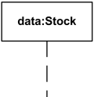
Lifeline with name "data" of class Stock. |
A Lifeline is shown using a symbol that consists of a rectangle forming its “head” followed by a vertical line (which may be dashed) that represents the lifetime of the participant. |

Anonymous lifeline of class User. |
Anonymous lifeline has no name - arbitrary representative of class. |
![Lifeline x selected with [k] of class X.](notation/sequence-lifeline-selector.png "Lifeline x selected with [k] of class X.")
Lifeline "x" of class X is selected with selector [k]. |
Selector could be used to specify some lifeline from collection. |
| Execution | |

Execution specification shown as grey rectangle on the Service lifeline. |
Execution (full name - execution specification, informally called activation) is interaction fragment which represents a period in the participant's lifetime when it is
The duration of an execution is represented by two execution occurrences - the start occurrence and the finish occurrence. Execution is represented as a thin grey or white rectangle on the lifeline. |
|
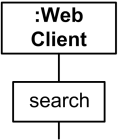
Execution represented as wider rectangle labeled as action. |
Execution can be represented by a wider labeled rectangle, where the label usually identifies the action that was executed. |
|
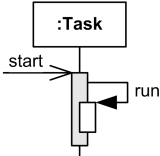
Overlapping execution specifications on the same lifeline - message to self. |
Overlapping executions on the same lifeline are represented by overlapping rectangles. |
|
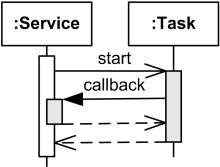
Overlapping execution specifications on the same lifeline - callback message. |
|
| Message | |
|
Message is a named element that defines one specific kind of communication between lifelines of an interaction. The message specifies not only the kind of communication, but also the sender and the receiver. Sender and receiver are normally two occurrence specifications (points at the ends of messages). A message is shown as a line from the sender message end to the receiver message end. The line must be such that every line fragment is either horizontal or downwards when traversed from send event to receive event. The send and receive events may both be on the same lifeline. The form of the line or arrowhead reflects properties of the message. |
|
| Messages by Action Type | |
|
Depending on the type of action that was used to generate the message, message could be one of: |
|
| Synchronous Call | |
|
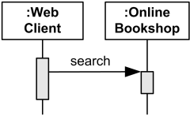
Web Client searches Online Bookshop and waits for results. |
Synchronous call typically represents operation call - send message and suspend execution while waiting for response. Synchronous Messages are shown with filled arrow head. |
| Asynchronous Call | |
|
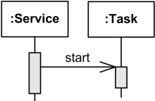
Service starts Task and proceeds in parallel without waiting. |
Asynchronous call - send message and proceed immediately without waiting for return value. Asynchronous Messages have an open arrow head. |
| Asynchronous Signal | |
|
Asynchronous signal message corresponds to asynchronous send signal action. |
|
| Create Message | |

Online Bookshop creates Account. |
Create message is sent to lifeline to create itself. Note, that it is weird but common practice in OOAD to send create message to a nonexisting object to create itself. In real life, create message is sent to some runtime environment. Create message is shown as a dashed line with open arrowhead (same as reply), and pointing to created lifeline's head. |
| Delete Message | |

Online Bookshop terminates Account. |
Delete message (called stop in previous versions of UML) is sent to terminate another lifeline. The lifeline usually ends with a cross in the form of an X at the bottom denoting destruction occurrence. UML 2.3 specification provides neither specific notation for delete message nor a stereotype. Until they provide some notation, we can use custom «destroy» stereotype. |
| Reply Message | |
|
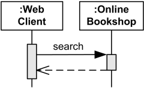
Web Client searches Online Bookshop and waits for results to be returned. |
Reply message to an operation call is shown as a dashed line with open arrow head. |
| Messages by Presence of Events | |
|
Depending on whether message send event and receive events are present, message could be one of:
|
|
| Lost Message | |

Web Client sent search message which was lost. |
Lost Message is a message where the sending event is known, but there is no receiving event. It is interpreted as if the message never reached its destination. Lost messages are denoted with as a small black circle at the arrow end of the message. |
| Found Message | |
|
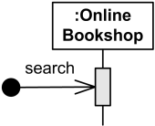
Online Bookshop gets search message of unknown origin. |
Found Message is a message where the receiving event is known, but there is no (known) sending event. It is interpreted as if the origin of the message is outside the scope of the description. This may for example be noise or other activity that we do not want to describe in detail. Found messages are denoted with a small black circle at the starting end of the message. |
| Destruction Occurrence | |
|
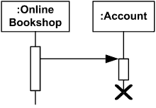
Account lifeline is terminated |
Destruction occurrence is a message occurrence which represents the destruction of the instance described by the lifeline. It may result in the subsequent destruction of other objects that this object owns by composition. No other occurrence may appear below the destruction on a given lifeline. Complete UML name of the occurrence is destruction occurrence specification. Until UML 2.4 it was called destruction event, and earlier - stop. The destruction of instance is depicted by a cross in the form of an X at the bottom of a lifeline. |
| State Invariant | |

Attribute t of Task should be equal to complete. |
A state invariant is an interaction fragment which represents a runtime constraint on the participants of the interaction. It may be used to specify different kinds of constraints, such as values of attributes or variables, internal or external states, etc. State invariant is usually shown as a constraint in curly braces on the lifeline. |

Task should be in Finished state. |
It could also be shown as a state symbol representing the equivalent of a constraint that checks the state of the object represented by the lifeline. This could be either the internal state of the classifier behavior of the corresponding classifier or some external state based on a "black-box" view of the lifeline. |
| Combined Fragment | |
|
Interaction operator could be one of:
|
|
| Alternatives | |
|
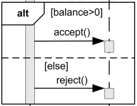
Call accept() if balance > 0, call reject() otherwise. |
The interaction operator alt means that the combined fragment represents a choice or alternatives of behavior. At most one of the operands will be chosen. The chosen operand must have an explicit or implicit guard expression that evaluates to true at this point in the interaction. |
| Option | |

Post comments if there were no errors. |
The interaction operator opt means that the combined fragment represents a choice of behavior where either the (sole) operand happens or nothing happens. An option is semantically equivalent to an alternative combined fragment where there is one operand with non-empty content and the second operand is empty. |
| Loop | |

Potentially infinite loop. |
If loop has no bounds specified, it means potentially infinite loop with zero as lower bound and infinite upper bound. |

Loop to execute exactly 10 times. |
If only min-int is specified, it means that upper bound is equal to the lower bound, and loop will be executed exactly the specified number of times. |
|
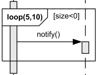
We may guess that as per UML 2.3, the loop is expected to execute minimum 5 times and no more than 10 times. If guard condition [size<0] becomes false loop terminates regardless of the minimum number of iterations specified. (Then why do we need that min number specified?!) |
If both bounds are specified, loop will iterate minimum the min-int number of times and at most the max-int number of times. Besides iteration bounds loop could also have an interaction constraint - a Boolean expression in square brackets. To add to the other confusions, UML 2.3 also calls both of them guards. UML tries to shuffle the simplest form of for loop and while loop which causes weird UML 2.3 loop semantics on p.488: "after the minimum number of iterations have executed and the Boolean expression is false the loop will terminate". This is clarified - with opposite meaning - on the next page as "the loop will only continue if that specification evaluates to true during execution regardless of the minimum number of iterations specified in the loop." |
| Break | |
|
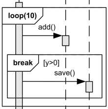
Break enclosing loop if y>0. |
The interaction operator break represents a breaking or exceptional scenario that is performed instead of the remainder of the enclosing interaction fragment. Note, UML allows only one level - directly enclosing interaction fragment - to be abandoned. This could become really annoying if double loop or loop with other combined fragments should be broken. |
| Parallel | |
|
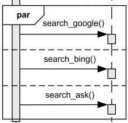
Search Google, Bing and Ask in any order, possibly parallel. |
The interaction operator par defines potentially parallel execution of behaviors of the operands of the combined fragment. Different operands can be interleaved in any way as long as the ordering imposed by each operand is preserved. |
|
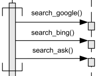
Coregion - search Google, Bing and Ask in any order, possibly parallel. |
Parallel combined fragment has a notational shorthand for the common situations where the order of events on one lifeline is insignificant. In a coregion area of a lifeline restricted by horizontal square brackets all directly contained fragments are considered as separate operands of a parallel combined fragment. |
| Strict Sequencing | |
|
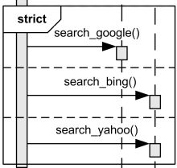
Search Google, Bing and Yahoo in the strict sequential order. |
The interaction operator strict requires a strict sequencing (order) of the operands on the first level within the combined fragment. |
| Weak Sequencing | |
|
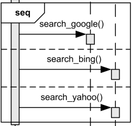
Search Google possibly parallel with Bing and Yahoo, but search Bing before Yahoo. |
Weak sequencing seq is defined by the set of traces with these properties:
Thus weak sequencing seq reduces to a parallel merge when the operands are on disjunct sets of participants. Weak sequencing reduces to strict sequencing when the operands work on only one participant. |
| Critical Region | |
 or remove() could be called in parallel, but each one should run as a critical region.")
Add() or remove() could be called in parallel, but each one should run as a critical region. |
The interaction operator critical defines that the combined fragment represents a critical region. A critical region is a region with traces that cannot be interleaved by other occurrence specifications (on the lifelines covered by the region). This means that the region is treated atomically by the enclosing fragment and can't be interleaved, e.g. by parallel operator. |
| Ignore | |
|
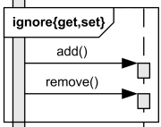
Ignore get and set messages, if any. |
Interaction operator ignore means that there are some messages that are not shown within this combined fragment. These message types can be considered insignificant and are implicitly ignored if they appear in a corresponding execution. The list of ignored messages follows the operand enclosed in a pair of curly braces "{" and "}". Ignore operation is typically combined with other operations such as "assert ignore {m, s}." |
| Consider | |
|
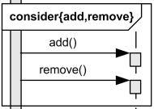
Consider only add() or remove() messages, ignore any other. |
The interaction operator consider defines which messages should be considered within this combined fragment, meaning that any other message will be ignored. The list of considered messages follows the operand enclosed in a pair of curly braces "{" and "}". Consider operation is typically combined with other operations such as "assert consider {m, s}." |
| Assert | |
|
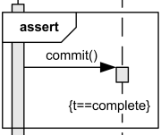
Commit() message should occur at this point, following with evaluation of state invariant. |
The interaction operator assert means that the combined fragment represents the assertion that the sequences of the assert operand are the only valid continuations (must be satisfied by a correct design of the system). All other continuations result in an invalid trace. |
| Negative | |
|
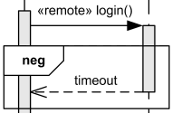
Should we receive back timeout message, it means the system has failed. |
The interaction operator neg describes combined fragment of traces that are defined to be negative (invalid). Negative traces are the traces which occur when the system has failed. All interaction fragments that are different from the negative are considered positive, meaning that they describe traces that are valid and should be possible. |
| Interaction Use | |
|
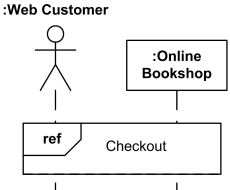
Web customer and Bookshop use (reference) interaction Checkout. |
Interaction use is interaction fragment which allows to use (or call) another interaction. Large and complex sequence diagrams could be simplified with interaction uses. It is also common reusing some interaction between several other interactions. The interaction use is shown as a combined fragment with operator ref. |

Use Login interaction to authenticate user and assign result back to the user attribute of Site Controller. |
The syntax of the interaction use of the ref operator is:
interaction-use ::=
[ attribute-name '=' ]
[ collaboration-use '.' ]
interaction-name
[ io-arguments ]
[ ':' return-value ]
|